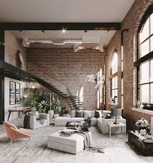
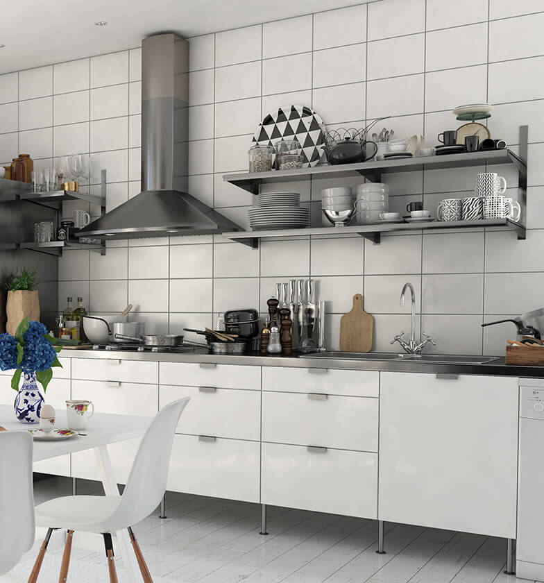

What is Industrial Urban Style?
Industrial urban design reflects the look of repurposed factories and warehouses. It uses raw materials like exposed brick, steel, and concrete to achieve a utilitarian yet stylish feel. This style blends old and new with a focus on functionality and edgy aesthetics.
Common Elements
- Exposed brick, pipes, and ductwork
- Raw materials like metal, concrete, and reclaimed wood
- Neutral color palette with black accents
- Industrial lighting fixtures and open floor plans
Gallery
 Budget-Friendly Tips
Use industrial lighting and shelving from hardware stores. Look for salvaged or factory-style pieces. Concrete finishes or faux brick wallpaper can offer affordable style.